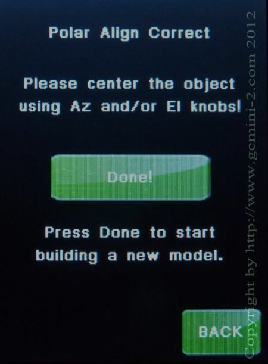

| Interactive Hand-Controller Menus - click on green button to Navigate |
|  |
PAC -
This is the PAC or Polar Align Correct menu. It will only show up after a model is built.
Using PAC will wipe out any model your built. In using PAC, pay attention to when you have a star that is nearly straight up in the sky. Ideally, you'll want one that is a little south (if you happen to be in the northern hemisphere) or vice versa if you're in the southern hemisphere. That'll put it near that intersection. When you come to this page from any other location, the star that the telescope was pointed at, is what you are going to re-center on. The telescope will move off of that object by the amount of Polar Error that it has calculated from doing an alignment. You can do the PAC on any target once the button shows up in the startup. You'll just get better results using a target near that intersection. The centering will be done using the Alt and AZ adjustment on the mount --- not using the slew controls on the directional paddle. Take your time and be patient! |
|
Note that once you've hit the "done" button, the PAC alignment will
discard the previously built pointing model, so you'll need to start over again,
and take you back to the main menu.
The suggestion is to do the PAC twice to get good results. Then
after that you will need to do at least a synchronize or a cold start. Also I would suggest that you use a camera and software that provides cross-hairs to do this alignment with. With the telescope pointed almost vertical you are going to have a hard time seeing through an eyepiece. |